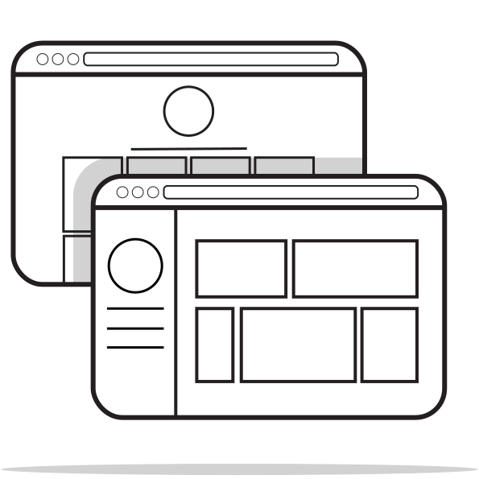

Icons

There is a secret little easter-egg to this portfolio - the website itself is a part of it. I designed and built it using basic HTML and CSS.
These are the icons I designed specially for use on this site.
(you can see them on the main page)
the candidates
These are the US presidential candidates - After the 2016 election, US politics has been more and more visible in non-US countries. Although I was a year late getting these ready for the election, I wanted to try and create instantly recognizable representations of some of the candidates using simple shapes and colours.